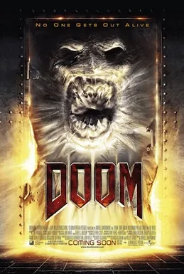

The genetics
Genetics provides the film's horror premise. The UAC's anthropology and genetics research has found that an extinct Martian race was genetically enhanced with an artificial 24th chromosome pair, and the company has been testing this "Martian chromosome" on people, without regard for the consequences. Samantha Grimm explains the results in moralistic terms: C24 grants superhuman abilities to some but turns those with violent or psychotic tendencies into monsters, as she believes happened to the Martians. The scientists are mostly victims of their own experiments, while the corporation is the real culprit, valuing the data above the lives of its staff. Genetically, the premise does not hold up. Humans have 23 pairs of chromosomes, so a 24th pair would be a new, artificial addition, and a single injection could not insert it into the trillions of cells of an adult body. Behaviour is shaped by many genes and the environment, not by a switch that sorts good people from bad.
The story
Loosely based on the video game series. In 2046, the Union Aerospace Corporation (UAC) runs a research station on Mars, reached through the Ark, a portal discovered under the Nevada desert. After an attack on the facility, a squad of marines led by Sarge is sent to retrieve the company's research data, accompanied by the scientist Samantha Grimm, sister of the marine John "Reaper" Grimm. They find that the scientists had uncovered the remains of an ancient humanoid race with an artificial extra pair of chromosomes, the 24th, and had been injecting this "C24" into humans. Most of those injected turn into monsters, which spread through the station and through the Ark to Earth. Samantha suggests that C24 transforms people according to their nature. When Reaper is gravely wounded, she injects him with it: he gains superhuman abilities, kills the infected Sarge and carries his sister home.